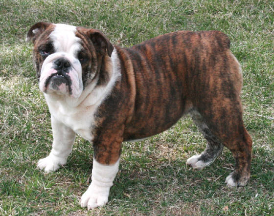

English Bulldogs are a breed of dogs that originated from England. They are descendents of mastiffs. They have been around for many centuries. As history states, they were used for bringing down bulls during bull fighting using their strong jaws and upper body strength. In modern day, they are used as family pets or even school mascots such as UGA.
English Bulldogs have some very unique physical features that makes them such beautiful dogs. They are a medium sized dogs with short front legs and back legs tho their front legs are slightly bowed out giving them a wide stance. Another unique physical features that they have is the huge short-faced head with wide set shoulders that gives off the appearance of strength. Most have big black and brown eyes tho there are some that have blue eyes. Their nose is typically inward instead of outward like most dogs are. The reason is because of how their face bone structure is shaped. They have short fine shiny coat that can be in the colors that are shown below in the table.
| Color | Picture |
|---|---|
| Brown/White **This is a picture of my boyfriend and I bulldog Walker** | |
| Red Brindle |  |
| Grey Brindle | |
| White |
Most people when they think of english bulldogs, they think they are mean and aggressive dogs. But in reality, they are very sweet, compassionate, gentle, and loving dogs. The only time they get really aggressive is when they are feeling threatened or when their family member is being threatened or in danger. They are fiercely loyal to their owners and protect their family. Most english bulldogs are not very active dogs. They are very laid back dogs and typically can be left to their own selves. However, they do like to play some during the day like go outside, play chase, or even wrestle too. They make a good family dog.
URL Addresses to the images and some information used in this webpage. I do not own any of these images except for the Brown and White image in the table.
{kind=link}
{kind=link}
{kind=link}
{kind=link}